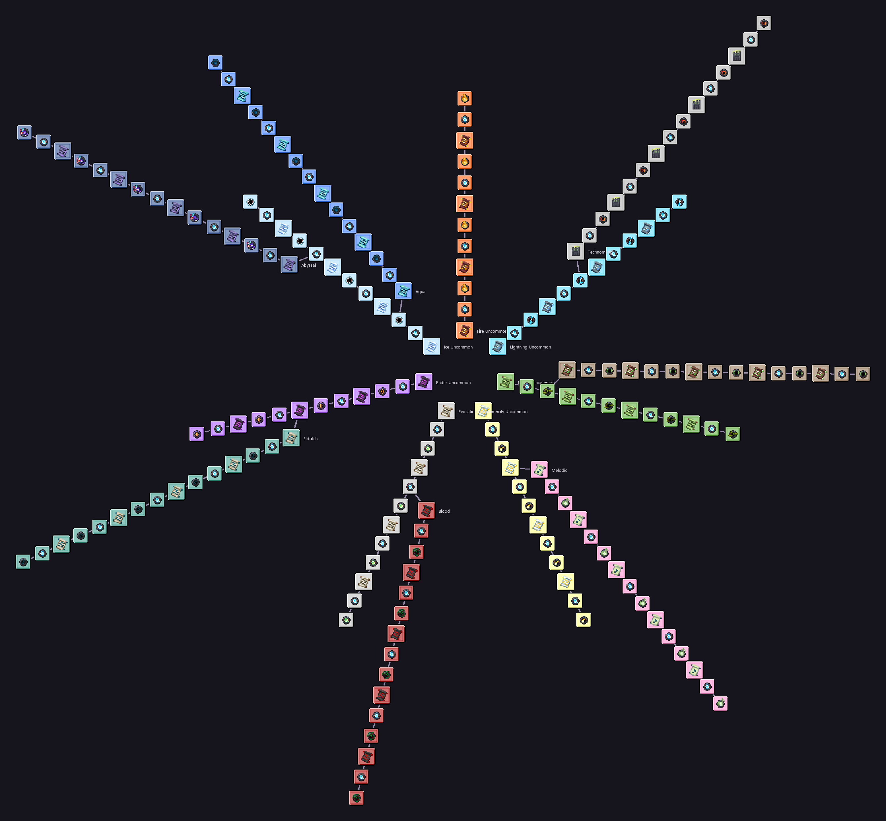

Arcana skill tree
189 nodes, 2 starting points. Unlock higher spell tiers per school. Side schools must be awakened first.
100%
Hover a node for details.

189 nodes, 2 starting points. Unlock higher spell tiers per school. Side schools must be awakened first.
